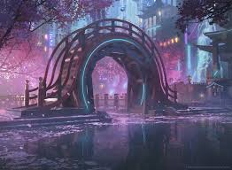
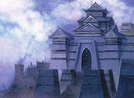

Top activities in Kamigawa

Explore Towashi
The main city in Kamigawa is known for its neon lights, towering skyscrapers, and Boseiju - the last remnant tree of the vast forest that used to be here.

Tour Eigango Castle
This ancient castle was built on the ruins of an even more ancient castle. It is the center of Imperial power and the home of the Emperor of Kamigawa.

Watch a Parade
Human and Kami spirits live side by side in Kamigawa, and if you are lucky you might happen upon a festival such as the March of Otherworldly Light.